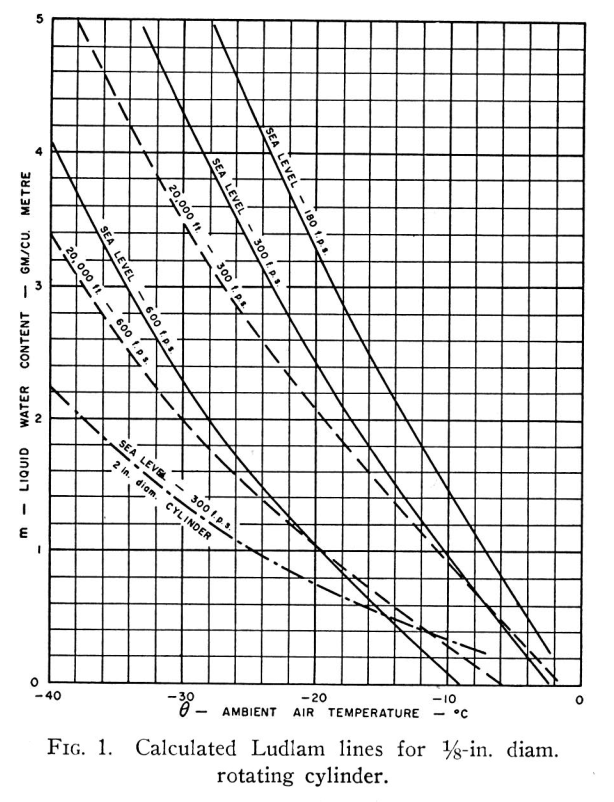

"A Summary of Meteorological Conditions Associated with Aircraft Icing and a Proposed Method of Selecting Design Criterions for Ice-Protection Equipment" 1
"the heat required for protection for this [severest] situation is several times that required for the most probable icing condition."
Summary
By allowing some ice to accumulate in severe icing conditions, the peak energy requirements for ice protection can be reduced.
Key Points
The altitude and temperature boundaries for Continuous Maximum Icing are establish that are later used in Appendix C.
"A total of 305 traverses of cumuliform clouds by P-61C airplanes were made in icing conditions,
and on no occasion did ice accumulate before the end of a traverse to
such an extent as to make safe flight impossible."
"the heat required for protection for this [severest] situation is several times that required for the most probable icing condition."
"Ice-protection equipment for some critical
aircraft components, such as …
"the collection of data indicating the maximum extent, severity, and frequency of conditions"
"Meteorological Analysis of Icing Conditions Encountered in Low-Altitude Stratiform Clouds"
Summary
Data about the horizontal and vertical extend of icing clouds.
Key Points
A factor of distance traveled in icing related to liquid water content is noted.
The maximum vertical extent of icing clouds is quantified.
"Observations ... during the 1948-49 and 1949-50 winters were in substantial agreement with values previously reported."
Abstract
SUMMARY
Liquid-water content, droplet size, and temperature data measured
during 22 flights in predominantly stratiform clouds through the
1948-49 and the 1949-50 winters are presented. Several icing encounters
were of greater severity than those previously measured over the
same geographical area, but were within the limits of similar measurements
obtained over different terrain within the United States.
An analysis of meteorological conditions existing during the
74 flights conducted for four winters indicated an inverse relation …
"Recommended Values of Meteorological Factors to be Considered in the Design of Aircraft Ice-Prevention Equipment" 1
"Progress ... has been handicapped by the lack of sufficient data on the meteorological factors."
Summary
Icing conditions for the design of equipment are proposed, which are later part of Appendix C.
Key Points
Classes of icing conditions are proposed.
Recommendations are made by type of equipment as to which class apply.
This became the basis for a large part of the later CFR 14 Part 25 Appendix C.
Abstract
Meteorological conditions conducive to aircraft icing are
arranged in four classifications: three are associated with cloud
structure and the fourth with freezing rain. The range of possible
meteorological factors for each classification is discussed and
specific values recommended for consideration in the design of
ice-prevention equipment for aircraft are selected and tabulated. The
values selected are based upon a study of the available observational
data …
"Complete information concerning the fundamental physical processes that determine the structure of clouds and cloud systems has necessitated a statistical approach to the problem."
"Investigation of Meteorological Conditions Associated with Aircraft Icing in Layer-Type Clouds for 1947-48 Winter"
Summary
Measured icing conditions in 1947-48 were consistent with prior measurements.
Key Points
Measured icing conditions in 1947-48 were consistent with prior measurements.
Cumulative-frequency graphs of indicate the frequency of various icing conditions.
The Weather Bureau scale of icing intensity is used as a comparison to measured data.
Abstract
SUMMARY
Rotating-cylinder measurements of the icing conditions encountered
in flight during the winter of 1947-48 are presented. Liquid-water
content, drop size, and temperature data are shown to be consistent
with previously measured conditions and with proposed
maximum icing conditions in supercooled layer-type clouds.
Cumulative-frequency graphs of meteorological
parameters indicate the frequency
with which various icing conditions have been encountered in the
Great Lakes …
"liquid water concentration at any point in the cloud may be calculated by considering an air parcel lifted adiabatically from the condensation level"
"Icing Properties of Noncyclonic Winter Stratus Clouds"
Summary
Adiabatic lift theory is used to estimate the liquid water content of clouds.
Key Points
Adiabatic lift theory is used to estimate the liquid water content of clouds.
Drop size instrumentation was limited to a 4 inch cylinder for maximum drop size.
"Calculations ... show that the liquid
water concentration in noncyclonic stratus clouds is not likely
to exceed 1.5 grams per cubic meter."
Abstract
Introduction
In order to establish a rational basis for the efficient design of thermal
ice-prevention systems for airplanes the
Ames Aeronautical
Laboratory
of the National Advisory Committee for Aeronautics
has undertaken experimental
investigation of the meteorological conditions conducive
to the formation of ice on aircraft.
A C-46 airplane has been equipped to measure
free-water …
"The maximum icing conditions in which ice-prevention equipment will be expected to provide adequate protection"
from "FLIGHT INVESTIGATION OF METEOROLOGICAL FACTORS CONDUCIVE TO AIRCRAFT ICING", William Lewis, NACA Conference on Aircraft Ice Prevention A Compilation of Papers Presented by NACA Staff Members. 6505/NACA-1947/8, 1947.
Early Ice Protection Systems were designed without detailed
knowledge of icing conditions in clouds.
While successful designs were accomplished with extensive iteration and flight test,
more optimal design is only possible if the conditions are known beforehand.
Progress ... has been handicapped by the lack of sufficient data on the meteorological factors. NACA-TN-1855, 1949.
A better understanding of the icing atmosphere evolved in parallel with improved
Meteorological Instruments in the years 1944 to 1952.
Two of the authors (Kline, Lewis) were meteorologists from the US Weather Bureau.
This helped put the data on a sound scientific basis.
Ice protection system development continues to address new challenges.
Key Points
Design guides can lead you to "adequate" designs for several technologies.
Design guides provide procedures to compare candidate systems.
Optimal designs and new requirements may require system development.
Discussion
We have seen "the possible methods for overcoming the ice hazard"
that were developed in the NACA-era in this Ice Protection Thread.
The period up to and through WWII (1945) was largely characterized by expeditious tests to
address immediate icing problems.
The quote above "The industry has now passed through the experimental stages of heating and anti-icing ..."
from 1946 was not completely the case, but NACA did move on to
more planned scientific and engineering tests and analysis methods development.
By the 1950's useful Engineering Design Manuals were available,
so that …
"An aircraft engineer can use this report to design adequate ice protection systems for any type aircraft for any flight mission profile."1
Figure 4.2-2 of ADS-4.
Summary
The knowledge of aircraft icing matured to produce engineering design manuals.
Key Points
NACA publications contributed heavily to later design manuals.
Extensive design publications distilling research into practical methods appeared in the 1950s.
I do not know of a comprehensive design resource for some recent topics such as 3D design and analysis.
Discussion
NACA had an early period (up to and including WWII)
that was largely characterized by expeditious tests to
address immediate icing problems.
Later, NACA embarked on more scientifically oriented studies.
The science and experience of aircraft ice protection had matured enough
by the 1950s for comprehensive engineering design manuals to be written.
While NACA did not write all of the design manuals,
all of the design manuals heavily …
Anon.: Aviation Weather For Pilots and Flight Operations Personnel. AC 00-6A (Cancelled), FAA, issued April, 1975, cancelled 2016. https://www.faa.gov/regulations_policies/advisory_circulars/index.cfm/go/document.information/documentID/22268 ↩
Loughborough, D. L.:"Mechanical De-Icing Systems", (B. F. Goodrich Company), Lecture No. 10, University of Michigan Airplane Icing Information Course, 1953. ↩
Anon., Air Command Weather Manual (Canada), CFACM 2-70, May 22, 2001. ↩
"ice formation can be redefined in more general terms as a thermodynamic problem"1 (1936)
Summary
The thermal analysis of icing conditions has unique challenges,
including the determination of heat transfer coefficients and fraction of the surface wetted.
Key Points
Measured heat transfer coefficients in dry air can be different between flight and tunnel tests, due to free stream turbulence.
Icing conditions tend to promote more turbulent flow on the surface.
Assumptions about the fraction of the surface wetted aft of impingement affect the thermal analysis.
Introduction
Experience indicates that certain types of control surfaces, for example,
accumulate ice, while others do not. It suggests the need for particular care in the
design of slotted controls, the more especially as de-icers can hardly be used in a slot.
While of course much of this work can only be done in a refrigerated tunnel where
practical tests of actual ice deposit …
"I am surprised to find that there are so many details which have not been anticipated before the de-icing tests were started." (1942)
Figure 1 from NACA-TN-1789.
Summary
The effects of icing on small components must be addressed.
Key points
Flight tests in natural icing revealed (and still reveal) small component icing effects.
Fuel vents designs were evaluated.
"At present very little is known of the effect of radome icing on radar operation."
The effect of icing on the radome for radar was evaluated.
Introduction
We saw some details of the Lewis Rodert's work on the
Lockheed 12A test aircraft in Engine Exhaust Heat.
However, wing ice protection was not the only challenge:
To fly into ice clouds and survive,
the Ames group necessarily became expert on the impact
of ice on the total aircraft.
"I am surprised to find", noted [NACA Langley] Engineer-in-Chief Smith DeFrance,
"that there are so …
"Alcohol as a means of protection against ice formation on propeller blades is widely used by commercial air lines on transport airplanes."1
Figure 2 from NACA-RB-4F06.
Summary
Freezing point depressant fluids were used widely in the NACA-era.
Key points
The use of freezing point depressant fluids were not pioneered by NACA, NACA studied improvements.
Analysis methods were developed in the NACA-era.
Freezing point depressant fluids are still used today.
Discussion
This is a technology that was not invented by NACA.
NACA studies sought to improve the use of freezing point depressant fluids.
When mixed with water, a freezing point depressant fluids lowers
the freezing/melting temperature of the mixture,
and enough fluid can lower that temperature below the equilibrium wet surface temperature,
preventing or removing ice.
There are many potential freezing point depressant fluids.
In the NACA-era, alcohols were the most widely used.
Today, for aircraft deicing on the …
"an effective system for ... wing surfaces to prevent the formation of ice requires knowledge"
Figure 2 of NACA-ARR-A506
Summary
Combustion heated air, independent of the engines, was used on some aircraft.
Key Points
Combustion heaters were developed independently of NACA.
38 NACA publications detail technical aspects of aircraft heaters,
including many details on heat exchangers, maturing engineering designs.
Three publications deal with heat transfer for ice protection.
Discussion
There were numerous NACA publications on aircraft heaters.
For the combustion heaters, air was scooped in,
heated by burning aviation gasoline,
and used for cabin heating, and wing ice protection on some airplanes
(The DC-6, for example).
Combustion heaters were developed independently of NACA
prior to these NACA publications.
However, the NACA publications very much detailed
the design of not just the heaters,
but also associated heat exchangers and components,
as well as data needed for analysis
(such as "An Investigation of …
"... the power required for ice prevention may be excessive for certain applications, although sufficient power for some degree of ice removal may be provided readily."1
Figure 12 of NACA-ARR-4A20.
Summary
Electrothermal deicing is studied in the NACA-era.
Key Points
The power levels required for continuous anti-ice are challenging, so deicing was persued.
Runback ice and residual ice are challenges for deicing.
Analogue computers calculated transient heating and deicing.
A chordwise-sequenced zone heating ice shedding strategy was devised.
The current 787 jet aircraft uses electrothermal heating for wing anti-icing and de-icing.
Discussion
The electric powered deicing of propeller blades,
as well as wing leading edges,
was studied by NACA.
The deicing of propellers is perhaps easier in some ways,
as the centrifugal of the spin greatly aids the shedding of ice.
Also, there are scale differences, as a wing airfoil
usually has a larger chord length than a propeller.
However …
"the most economical icing protection ... consists of a system utilizing hot gas from a convenient heat source, namely, the turbojet-engine compressor"1
From NACA-TN-2866.
Summary
Compressed air heating becomes common for ice protection in the jet era.
Key points
To support jet engine powered transportation, NACA had several studies of ice protection using compressed air heating.
Deicing schemes were proposed to reduce the amount of air bled from the engines.
Some innovative features, like continuously heated parting strips and
recirculating hot air supply, did not see much use.
Compressed air heating is used widely today for jet powered transports.
Discussion
As aviation entered the jet propulsion age,
reciprocating-engine exhaust heat was not an option.
However, the jet engine air compressor offers an ample
(but not unlimited) supply of hot, compressed air that may be bled
from the engine compressor airstream
for ice protection, cabin heating, and other functions.
This investigation was conducted by the National
Advisory Committee for Aeronautics to study the practicability
of employing heat as a means of preventing the
formation of ice on airplane wings. The report relates
essentially to technical problems regarding the extraction
of heat from the exhaust gases and it proper distribution
over the exposed surfaces. In this connection a separate
study has been made …
"A demon was operating the throttle." S. W. Sparrow, 1920. 1
From NACA-TR-982.
Summary
Carburetor icing has been a known hazard for over 100 years, and
many protection strategies were studied in the NACA-era.
Key Points
Carburetor icing has been a known hazard for over 100 years.
Part of the hazard can occur in clear air (throttling icing and fuel-evaporation icing).
"The NACA induction-system icing program at the National Bureau of Standards was initiated in January 1941. The project is financed jointly by the Army, the Navy, and the National Advisory Committee for Aeronautics."
Numerous tests and studies were conducted in the NACA-era.
Many aircraft today have carburetor protection similar to that developed in the NACA-era.
Discussion
The spark ignition, Otto cycle engines
commonly used on airplanes in the NACA-era
typically had carburetors to control the air and fuel entering the cylinders for combustion.
These could be affect by ice …
"The removal of ice from a De-Icer surface depends on the true adhesion of ice to rubber..." 4
Image from “Engineering Summary of Airframe Icing Technical Data” ADS-4, 1963.
Summary
Pneumatic boot deicers were the first widely used form of
aircraft ice protection, and are still used today.
Key Points
Deicing boots were developed independent of NACA.
Oil coatings aid the shedding of ice.
NACA development efforts largely shifted to thermal deicing in the 1940s.
Introduction
As detailed in "We Freeze to Please": A History of NASA's Icing Research Tunnel and the Quest for Flight Safety,
the “expanding rubber sheet” or “ice-removing overshoe”
for ice protection was developed independently from NACA in the 1930s,
and was the first widely used method of aircraft ice protection.
Small passages within the rubber could be periodically inflated to shed ice (typically once every two minutes).
While some "inter-cycle" ice forms, the maximum amount …
"The documents were so old, however, that they were not listed in the modern computerized library search systems, and some of these documents were out of print." 1
NACA Cleveland library, circa 1945.
I can usually get even rare and obscure publications
through inter-library loan from my public library,
but these were reported as having no loanable copies available.
I would appreciate any help anyone can offer
finding them as loanable print copies or digitally.
Could only find at google books
NACA conference on some problems of aircraft operation [at] Lewis Flight Propulsion Laboratory, Cleveland, Ohio, November 17, 18 1954 https://books.google.com/books?id=bsxQAAAAYAAJ
Recently made available online
Elliot, H. W.: Cloud Droplet Camera. Published by National Research Council of Canada, Ottawa, 1947 nrc-publications.canada.ca
Smith, E. L.: The design of fluid anti-icing systems. National Aeronautical Establishment (Canada) LR-64, 1953. nrc-publications.canada.ca
During the war, more than a hundred cargo planes of the Air Transport Command,
flying from bases in India over the Hump to battlefronts in China, crashed
in the Himalayas. Most of them were brought down by ice. In a single day in 1944,
nine of these big Army transports, loaded with sorely needed supplies for the Allies’
fighting forces, were lost.
Many of the fatal crashes of commercial aviation have been traced to this same
cause. For years commercial transports have been equipped with anti-icing devices,
but the apparatus in common use was designed to assist in meeting an emergency
when it arises, not to prepare the plane for deliberate flight into ice clouds.
If dangerous icing conditions are inadvertently encountered, transport pilots are instructed
to turn back or land at a safe alternate airport …
The image was generated with DALL-E 2 with the prompt
"An airplane from 1946 flying with engine exhaust heat ice protection".
I have no idea what the orange thing (ribbon and bow?) is on the wing.
Prompt: "Write a blog post about the use of engine exhaust heat for aircraft ice protection during the era of the National Advisory Committee for Aerodynamics, including citations"
Response:
The National Advisory Committee for Aerodynamics (NACA) was a organization in the United States that existed from 1915 to 1958. During its existence, NACA carried out research on various aspects of aerodynamics, including the use of engine exhaust heat for aircraft ice protection.
One of the early NACA reports on this topic, "Investigation of the Feasibility of Utilizing Engine Exhaust Heat for Ice Protection," was published in 1945. The report described experiments in which heat from …
"... Before attacking what appeared to be a new icing problem we should study the icing work of the 1940's and 50's."1
One year of "Blast from the Past: NACA Icing Publications"
Image from "NACA Conference on Aircraft Ice Prevention A Compilation of Papers Presented by NACA Staff Members" 6505/NACA-1947/8, 1947. (colorized) (and the new logo for 2023)
I made 50+ posts in the past 12 months.
I am thankful for the continuing level of interest shown in the topic.
"A measure of the concentration of liquid water in a supercooled cloud is of considerable value in determining the severity of aircraft icing conditions"
"A Simplified Instrument for Recording and Indicating Frequency and Intensity of Icing Conditions Encountered in Flight"
An instrument for automatically recording the occurrence of icing and liquid water content values is described.
Key Points
The instrument relied on the plugging of holes exposed to icing, which made a measurable pressure difference.
The instrument was cyclically deiced with electric heating.
Data was recorded on film that was later processed.
The instrument was used on numerous flights.
Abstract
An instrument for recording and indicating the frequency and
intensity of aircraft icing conditions has been developed by the NACA
Lewis laboratory to obtain statistical icing data over world-wide air
routes during routine airline operations. An accumulation of data of
this type is needed to provide pertinent meteorological …
"Because the charge placed on the droplets is a function of the droplet size, the size spectrum can be determined ..."1
"An Instrument Employing a Coronal Discharge for the Determination of Droplet-Size Distribution in Clouds"
Summary
Electrical charges imparted to water drops allowed easier measurement of impingement on cylinders.
Key Points
This was a multicylinder instrument that relied on the differential collection efficiency of different cylinder sizes.
The measurement of electrical charge allowed easier measurement of impingement rates.
There does not appear to be further use or development of the instrument.
Abstract
A flight instrument that uses electric means for measuring the
droplet-size distribution in above-freezing clouds has been devised and
given preliminary evaluation in flight. An electric charge is placed
on the droplets and they are separated aerodynamically according to
their mass. Because the charge placed on the droplets is a function of
the droplet size, the size spectrum …
"The subject of aircraft ice protection has provoked much controversy and discourse among theorists, designers, laboratory and test engineers, and flight operations people."1
Abstract
("Summary" in the orignal).
The subject of aircraft ice protection has provoked much controversy
and discourse among theorists, designers, laboratory and test
engineers, and flight operations people. In view of this diversity
of opinion and variety of approach, some difficulty has been
experienced in applying current standards and in maintaining
uniformity in the substantiation of aircraft ice protection.
This symposium recognized the need to exchange ideas and it
provided a general review of icing criteria, ice protection
standards, methods of compliance, and service experience. It
also served as a general refresher for Federal Aviation Administration
personnel involved in the evaluation of aircraft ice protection.
Technical papers were presented by government research and test
organizations, aircraft engine and aircraft manufacturers, military
services. and airline operators. The …
Note: an earlier edit of this post had a different address for Mastodon.
I have since changed instances.
The community on historians.social is a better fit for this than a general use instance.
Switching instances is a normal thing in the fediverse.
"... it is believed that a comparison of the water-drop impingement over several different airfoils ... is of interest"
Figure 5 from NACA-TN-1397
NACA-TN-1397, "A Method for Numerically Calculating the Area and Distribution of Water Impingement on the Leading Edge of an Airfoil in a Cloud." 1
NACA-TN-2476, "An Empirical Method Permitting Rapid Determination of the Area, Rate, and Distribution of Water-Drop Impingement on an Airfoil of Arbitrary Section at Subsonic Speeds." 2
NACA-RM-E52B12, "Impingement of Water Droplets on an NACA 651-212 Airfoil at an Angle of Attack of 4°." 3
Summary
Three publications detail water impingement calculations.
Key Points
Impingement analysis methods are detailed.
Data for several airfoils are presented.
Methods to estimate impingement without the use of a differential analyzer are included.
An instrument is not described, but the later NACA-TN-3338 does describe drop size distribution measurements.
"a simple and rapid means for measuring the liquid-water content of clouds"1
NACA-RM-E50J12a, "Flight Instrument for Measurement of Liquid-Water Content in Clouds at Temperatures Above and Below Freezing"
NACA-TN-2615, "The Calculated and Measured Performance Characteristics of a Heated-Wire Liquid-Water-Content Meter for Measuring Icing Severity"
NACA-RM-A54I23, "A Heated-Wire Liquid-Water-Content Instrument and Results of Initial Flight Tests in Icing Conditions"
We will detail NACA-RM-A54I23 herein, as that was the final in the series
of publications detailing the development,
and will include some detail from the earlier NACA-RM-E50J12a and NACA-TN-2615.
Summary
Electrically heated probes can measure water exposure rate,
from which LWC can be calculated.
Key points
The technology evolved over the span of the three publications.
A heated wire probe can provide measurements with low lag (~1 second),
faster than other technologies available in the NACA-era.
There was an earlier "cloud indicator" based on similar technology.
"it is necessary to measure the sizes of the droplets within the clouds."1
NACA-RM-E50K01a, "Flight Camera for Photographing Cloud Droplets in Natural Suspension in the Atmosphere"
NACA-RM-E51G05, "Adaptation of a Cascade Impactor to Flight Measurement of Droplet Size in Clouds"
NACA-TN-3592, "An Oil-Stream Photomicrographic Aeroscope for Obtaining Cloud Liquid-Water Content and Droplet Size Distribution in Flight"
Summary
Three strategies were explored for water drop imaging.
In NACA-RM-E50K01a, a telephoto arrangement allowed imaging water drops in situ.
In NACA-RM-E51G05, water drops were put through a particle size sorting cascade, impacting on slides, and imaged.
In NACA-TN-3592, water drops were captured in an oil stream exposed to the ambient flow, and then imaged.
Key Points
Three methods for obtaining images of water drops are discussed.
Images of enough water drops allowed the calculation of the drop size distribution.
These instruments had limited influence in the NACA-era.
"A review ... of meteorological factors conducive to aircraft icing reveals outstanding needs" for icing instrumentation.
Key points
Nine instruments, based on differing technologies, are qualitatively assessed.
"The [multicylinder] method has assumed the position of a standard against which other instruments are calibrated, and is apt to remain so..."
"This [rotating disk] device should prove very useful in both the formative and statistical investigations."
"A reliable method for the measurement of drop-size distribution should be developed"
Abstract
The status of instrument suitable for the measurement of the
meteorological factors conducive to aircraft icing is reviewed. The
meteorological factors to be evaluated are listed, and tentative
values for the desired and acceptable accuracy of measurement for …
This website was written with people in mind (engineers, aerodynamicists) who already know something about aircraft and aircraft icing.
To make it a little more understandable to others, I summarize here the assumed
common knowledge, with a few of the key technical terms.
Airplanes require lift from the wings in order to fly.
This lift is produced due to details of the air flowing over the well-shaped wing.
Ice may form on airplanes in flight in certain weather conditions.
The ice changes the shape of the wing, and can reduce lift and produce more drag on the airplane.
Measurements of lift are often expressed as the coefficient of lift (Cl)
and drag as the coefficient of drag (Cd).
To limit the effects of ice in flight, some aircraft (and nearly every commercial airliner)
has ice protection on parts of the wing and other aircraft surfaces.
This protection is often heating …
"With a thermal IPS, energy reduction can be achieved by operating in a ‘running wet’ mode under more extreme icing conditions."
AIAA-2017-3927, "Evaluation of Alternative Altitude Scaling Methods for Thermal Ice Protection System in NASA Icing Research Tunnel" 1
Summary
A procedure for scaling conditions for ice protection tests is detailed.
Key Points
Scaling methods for ice protection testing at sea level conditions were evaluated.
The "WePi3" scaling method was recommended.
The method requires in-test adjustments of heating to match reference surface temperatures.
Test conditions for unheated areas will be different from those for heated areas.
Abstract
A test was conducted at NASA Icing Research Tunnel to evaluate altitude scaling methods
for thermal ice protection system. Two new scaling methods based on Weber number were
compared against a method based on Reynolds number. The results generally agreed with
the previous set of tests conducted in NRCC Altitude Icing Wind Tunnel …
"a condition of supersaturation, which promotes the growth of frost deposits"
Summary
Supersaturated humidity can affect icing wind tunnel results.
Key Points
Some observations of supersaturated humidity conditions were made in the NACA-era.
Supersaturation was associated with frost on test article afterbodies.
Recirculating icing wind tunnel conditions are calculated to tend to be supersaturated.
Some potential effects of supersaturation are calculated.
A brief primer on humidity
A measurement of water vapor in the air is humidity.
Relative humidity is the most common measure.
In everyday life 30% to 60% relative humidity is generally considered to be comfortable.
Lower humidities feel dry, and higher humidities feel wet or "humid".
The most water vapor that can usually exist at a given static temperature is termed
"saturated", and that condition has 100% relative humidity.
Given sufficient time and condensation surfaces,
any surplus vapor above this value will condense as liquid water.
Similarity calculations for ice shapes are detailed.
Key Points
Several scaling methods with differing parameters are compared in tests.
"The Ruff method, supplemented with the constant-WeL approach to calculate scale velocity, is recommended"
Examples are included of how to deal with limitations (temperature, lwc, etc.)
Abstract
This manual reviews the derivation of the similitude relationships
believed to be important to ice accretion and
examines ice-accretion data to evaluate their importance.
Both size scaling and test-condition scaling methods
employing the resulting similarity parameters are described,
and experimental icing tests performed to evaluate
scaling methods are reviewed with results.
The material included applies primarily to unprotected, unswept
geometries, but some discussion of how to approach
other situations is included as well. The studies given
here and scaling methods considered …
"An unfortunate fact is that if proposed additional scaling parameters prove to be what is required to conduct improved subscale tests, icing wind tunnel subscale tests are likely to be even more restrictive."
"Proposed Modifications to Ice Accretion/Icing Scaling Theory" 1
Summary
Water surface tension is identified as a factor in ice shapes and test similarity.
Key points
18 dimensionless Pi-terms were identified.
"the π method has failed to provide a scaling methodology which can be used to test subscale aerodynamic components"
"however, does not preclude seeking approximate scaling methodologies"
Several late studies investigate the role of water surface tension and the Weber number.
Abstract
The difficulty of conducting full-scale icing tests has long been appreciated. Testing in an icing wind tunnel has
been undertaken for decades.
While aircraft size and speed have increased, tunnel facilities have not,
thus making subscale geometric tests a necessity.
Scaling laws governing these tests …
"drag coefficient (Cd) was used as an index of similitude by quantitatively indicating how much the shape or ice surface changed"
"An Empirical Look at Tolerances in Setting Icing Test Conditions with Particular Application to Icing Similitude" 1
Abstract
Often, engine icing tests cannot be conducted at conditions that are considered the critical
test points because of aircraft engine test facility operational constraints or the inability to
find the desired conditions in natural icing flight tests. The use of ice scaling laws may
circumvent this testing limitation. Earlier studies (Refs. 1 and 2) of the application of ice
scaling (similitude) to aircraft engine testing indicated that experimental data were needed
to determine to what extent icing test conditions [temperature (T), velocity (V), liquid water
content (LWC), median volume diameter (MVD), pressure (P)], could vary and still achieve
similar test results.
In this investigation, experimental data were gathered and analyzed to …
"It would be beneficial to the icing community if the feasibility of using scale models in these tests could be proven."
"Analysis and Verification of the Icing Scaling Equations" 1
Summary
An expanded set of icing similarity terms are derived and tested.
Key Points
Water drop impingement similarity is simplified using Ko.
Icing heat transfer similarity terms derived from Messinger are added.
Tests in an icing wind tunnel validate the selected set of similarity terms.
Abstract
1.1 BACKGROUND
The formation of ice on aircraft surfaces occurs during flight through supercooled
droplets. Ice accretions on these surfaces usually degrade both aircraft performance and
operational safety. For this reason, it has become important in the design and certification
phases of system development to evaluate system performance degradation because of icing.
The most acceptable method of evaluating the performance characteristics of aircraft
and aircraft components for system certification would be to conduct …
"If the values of the K and φ parameters for the model and full-scale nacelle are maintained the same, the icing characteristics of the model will be similar to the icing characteristics of the full-scale"
Summary
Early examples of icing test scaling are noted.
Key Points
Three publication that mention scaling are reviewed.
Some challenges with scaling are noted.
A airfoil design of a full scale leading edge truncated with an aft flap addresses some challenges.
Discussion
NACA-RM-E8A27 "Ice Protection of Turbojet Engines by Inertia Separation of Water, I - Alternate-Duct System" 1
This is the earliest example that I have found of using dimensionless water drop impingement terms for
test similarity calculations.
The results of a preliminary investigation of internal water-
inertia separation inlets designed to prevent automatically the
entrance of large quantities of water into a turbojet engine in
icing conditions are presented. A simplified analytical approach
to the design …
"Considerable time [was devoted] to means for controlling the amount of water sprayed into the air stream, the size of water particles, and the temperatures of the air and water" 1
Summary
Calibration methods evolved during the NACA-era
Key Points
Early tests had informal calibrations, partly due to a limited understanding of the natural icing environment.
Rotating multicylinders were the most used means of calibration.
Water spray nozzles were improved circa 1949.
The understanding of the natural icing environment had also advanced by 1949.
Discussion
As implied from the quote above from the year 1929,
the calibration of an icing wind tunnel is often not just measuring what the facility produces,
but also altering and improving the facility to achieve target values for water drop size and
liquid water content,
and producing a water drop spray that is uniform "enough".
There were five icing wind tunnels used by NACA.
The majority of the tests were performed in the Icing Research Tunnel (IRT) as NACA Lewis.
The four other tunnels are briefly described in the "Other icing wind tunnel tests" section below.
I found 37 NACA publications 1 that discuss use of the NACA Icing Research Tunnel …
"A spray, which consisted of very small drops, was found to be quite satisfactory"
"Refrigerated Wind Tunnel Tests on Surface Coatings for Preventing Ice Formation"
Summary
An early icing wind tunnel and test are described
Key Points
An early icing wind tunnel with most of the components of current tunnels is described.
A test of several coatings to prevent ice is detailed.
Many of the points noted about icing tunnel test reflect current test experience.
Abstract
This investigation was conducted in the Refrigerated Wind
Tunnel at Langley Memorial Aeronautical Laboratory, Langley
Field, Virginia, to determine the effectiveness of various surface
coatings as a means
for preventing ice formations on aircraft in flight.
The substances used as coatings for these tests are divided
into two groups:
compounds soluble in water, and those which are insoluble in water.
It was found that certain soluble compounds were apparently
effective in preventing the formation …
"Icing wind tunnels can simulate natural icing with water-spray and refrigeration systems ... to permit safe, convenient and relatively inexpensive testing."1
While there were extensive publications on how to use aerodynamic wind tunnels in the NACA-era
(for example, Pope's "Wind Tunnel Testing" 2),
there was no reference for using icing wind tunnels that I could find,
and I cannot think of a current publication that provides comprehensive guidance
(there are publications that cover specific aspects, as we shall see in the thread).
This thread will not by itself correct that problem, but it will summarize uses,
and perhaps provide some guidance by examples.
As there are numerous NACA publications (40+) that describe specific icing wind tunnel tests,
but only a little about the icing wind tunnel itself in each one,
I will not have a detailed review of most of the individual publications in this thread.
Instead, I …
Data from the post-NACA era are used to resolve open questions
Key Points
The Ice Shapes and Their Effects thread is summarized.
Post-NACA era data is used to resolve some open questions.
Correlations of drag due to ice have limited, "first order" accuracy.
Discussion
Review of the "Ice Shapes and Their Effects" thread so far
In this thread, we saw:
An almost "lost gem" of the NACA-era, NACA-TN-313, "The Formation of Ice upon Airplanes in Flight" with, in 1929:
- Description of supercooled large drop (SLD) icing conditions
- "Detect and exit" icing mitigation strategy
- Natural icing flight tests of icephobic materials
- Identification of different types of icing
"The upper surface [ice] horn acts as a spoiler, increasing drag, and reducing lift."
"Techniques Used to Determine Artificial Ice Shapes and Ice Shedding, Characteristics of Unprotected Airfoil Surfaces" 1
Summary
Glaze ice shape correlations for two commercial aircraft airfoils are developed.
Key Points
Icing wind tunnel tests with two commercial aircraft airfoils were conducted.
Glaze ice shape correlations were developed.
Airplane level ice effects are detailed.
The state of the art in 1969 is documented.
A Note
I briefly worked with Ramon Wilder (circa 1991?),
but I did not ask him about this particular publication.
I (a much junior engineer) did off-handedly ask him once about a certain heat conduction equation.
He said "I'll get back to you."
The next day he came in with a elegant, hand written, 10 page proof, and said
"That was a little tough. It took me three hours last night!"
That was the …
"this correlation is a first-order approximation of the presently available aerodynamic and icing data for airfoils exposed to icing conditions"
SAE Preprint No. 225, "Correlation of Airfoil Ice Formations and Their Aerodynamic Effects With Impingement and Flight Conditions"
and
NASA-TM-D-2166, "Prediction of Aerodynamic Penalties Caused by Ice Formations on Various Airfoils"
The content of these two publications are almost identical.
As NASA-TM-D-2166 is the one that was cited the most,
and has a more legible copy available online,
I will center the review around it.
Summary
A more general correlation of drag due to ice on an airfoil is developed.
Key Points
Several airfoils are studied in addition to the NACA 65A004 previously used.
A more general correlation of drag due to ice on an airfoil is developed.
For lift, "no systematic relation is readily apparent for a thin, sharp-nosed airfoil
such as the 65A004 airfoil".
"published aerodynamic data for performance penalties in icing conditions are not readily applicable to a very thin airfoil"
NACA-TN-4151, "Correlations Among Ice Measurements, Impingement Rates, Icing Conditions and Drag Coefficients for an Unswept NACA 65A004 Airfoil"
and
NACA-TN-4155, "Aerodynamic Effects Caused by Icing of an Unswept NACA 65A004 Airfoil"
These two publications reference each other, and so are reviewed together.
Summary
Correlations are develop between ice shapes, aerodynamic performance, and icing conditions.
Key Points
More than 60 ice shapes were measured in an icing wind tunnel for a thin airfoil section.
Correlations were developed between ice shapes, aerodynamic performance, and icing conditions.
Abstract
NACA-TN-4155:
The effects of ice formations on the section lift, drag, and
pitching-moment coefficients of an unswept NACA 65A004 airfoil section
of 6-foot chord were studied. The magnitude of the aerodynamic penalties
was primarily a function of the shape and size of the ice formation near
the …
"It is desirable to evaluate the effect of sweepback on the shape of the leading-edge ice formations and the associated drag penalties"
"Effect of Ice Formations on Section Drag of Swept NACA 63A-009 Airfoil with Partial-Span Leading-Edge Slat for Various Modes of Thermal Ice Protection" 1
Summary
The section drag due to ice on a swept airfoil section is measured.
Key Points
"At low rates of water catch, the rate of drag increase for the unheated swept 63A-009 airfoil is approximately 2 1/2 times as great as that of the unswept airfoil of reference 1 for similar icing conditions"
"In general, the studies showed that icing on a thin swept airfoil will result in more detrimental aerodynamic characteristics than on a thick unswept airfoil."
"small amounts of runback icing on the upper surface easily induced flow separation"
Abstract
The effects of primary and runback ice formations on the section …
"The results showed that glaze-ice formations, either primary or runback, ... caused large and rapid increases in drag, especially at datum air temperatures approaching 32F"
NACA-TN-2962, "Effect of Ice and Frost Formations on Drag of NACA 651-212 Airfoil for Various Modes of Thermal Ice Protection" 1
Summary
The drag due to ice shapes (including runback) are measured over a range of conditions.
Key Points
"The results showed that glaze-ice formations, either primary or runback, ... caused large and rapid increases in drag, especially at datum air temperatures approaching 32F"
There is an early statement of icing wind tunnel test to flight similarity.
Different phases of flight (takeoff, cruise, descent), including sequences, are considered.
By "discriminating use of the data", drag results can be estimated using NACA-TR-446.
Abstract
The effects of primary and runback icing and frost formations on the
drag of an 8-foot-chord NACA 651-212 airfoil section were investigated
over …
"It is significant that the control response of the airplane approached the point of being marginal when all of the airplane except the propeller had accreted ice"
NACA-TN-1598, "Effects of Ice Formations on Airplane Performance in Level Cruising Flight" 1
Summary
Airplane levels effects of icing are measured, and broken into major components.
Key Points
Numerous, excellent quality photos show how icing flight test "should be done".
Airplane levels effects of icing are measured, and broken into major components.
"It is significant that the control response of the airplane approached the point of being marginal when all of the airplane except the propeller had accreted ice."
Abstract
A flight investigation in natural icing conditions was conducted
by the NACA to determine the effect of ice accretion on airplane performance.
The maximum loss in propeller efficiency encountered due to
ice formation on the propeller blades was 19 percent. During
87 percent …
"The danger lies, not so much in the higher stalling speed, but more in the possibility that the stall may occur without advance warning to the pilot."
NACA-WR-L-292, "Effects of a Simulated Ice Formation on the Aerodynamic Characteristics of an Airfoil" 1
Summary
Airfoil characteristics with simulated residual ice are measured.
Key Points
An airline operator survey of ice shapes was conducted.
A residual ice shape was tested at near full scale.
A significant reduction in Cl_max values was found.
Values are compared to NACA-TR-446.
Abstract
In connection with the general study of icing problems
an item of major interest is the effect of ice on
the aerodynamic characteristics of a wing.
Of particular interest is the effect of the ice which remains on a wing,
under some flight conditions in spite of the operation of
rubber de-icers.
At the request of the N.A.C.A. a questionnaire …
"As regards the lift at higher angles of attack ..., the [effect] becomes increasingly serious as the protuberance approaches a point near the leading edge."
NACA-TR-446, "Airfoil Section Characteristics as Affected by Protuberances" 1
Summary
"Protuberances" on an airfoil can have significant effects on section lift and drag.
Key Points
Position and height of the protuberance are important.
While icing is not mentioned, later works will apply this data in an icing context.
Abstract
The drag and interference caused by protuberance
from the surface of an airfoil have been determined in the
N.A.C.A. Variable-Density Wind Tunnel at a Reynolds
Number of approximately 3,100,000. The effects of variations
of the fore-and-aft position, height, and shape of
the protuberance were measured by determining how the
airfoil section characteristics were affected by the addition
of th various protuberances extending along the entire
span of the airfoil. The results provide …
"an irregular shape is developed due to the ice formation, which is ruinous to the aerodynamic efficiency of the airfoils"
NACA-TN-313, "The Formation of Ice upon Airplanes in Flight" 1
Summary
Ice shapes are recorded in flight tests in natural icing conditions.
Key Points
Types of ice formations are noted, clear ice (possibly SLD) and rime ice.
The atmospheric conditions for the types of ice are noted.
"Oily surface" icephobic substances are tested.
Procedures for avoiding the most hazardous icing conditions are provided.
Abstract
This report describes the atmospheric conditions under
which ice is deposited upon the exposed parts of airplanes in flight.
It identifies the formation which is found under different conditions,
and describes some studies of preventative
means together with recommendations for avoiding the consequences of the formation.
Discussion
This is an almost "lost gem" of the NACA-era (cited only 10 times).
It features:
- Description of supercooled large …
"evaporation losses are ... very small (less than 1 percent) in the case of smaller obstacles (of icing-rate-measurement-cylinder size)."
"Maximum Evaporation Rates of Water Droplets Approaching Obstacles the Atmosphere under Icing Conditions" Evaporation calculations 1
Summary
Less that 1% of drops evaporate approaching an obstacle for most cases.
Key points
Equations are detailed for the evaporation of water drops approaching an obstacle.
The equations were coded into a python program.
Less that 1% of drops evaporate approaching an obstacle for most cases.
A water drop that approaches on the stagnation line but does not impinge is predicted to evaporate away.
NACA-TN-3024 was reviewed previously,
herein we will concentrate on comparing our own code to the results in NACA-TN-3024.
Abstract
When a closed body or a duct envelope moves through the atmosphere,
air pressure and temperature rises occur ahead of the body or, under ram
conditions, within the duct. If cloud water …
The AEDC 1-Dimensional Multi-Phase code (AEDC1DMP) and the iads1dmp
Abstract
The AEDC1DMP calculates the water drop speed and evaporation in an icing wind tunnel.
The AEDC1DMP is described in "Second Report for Research and Modeling of Water Particles in Adverse Weather Simulation Facilities" 1.
AEDC is the Arnold Engineering Development Complex, formerly the Arnold Engineering Development Center.
1.0 INTRODUCTION TO THE RESEARCH
This report describes a continuation of research into the modeling of water particle
freezing for application to adverse weather simulation facilities. The research was initiated in
FY1996 to investigate the physics of freezing of submillimeter supercooled water particles or
droplets in both natural and artificial or simulated adverse weather environments. The first phase
of the research was reported and discussed in a report [1] and a paper [2]. The work has
continued into FY1997 and has been expanded to include work done to model three-dimensional
ice accretions …
"It is possible to develop this theory to cover also growth of water droplets during the adiabatic expansion of a rising mass of saturated air."
Irving Langmuir, "Super-Cooled Water Droplets in Rising Currents of Cold Saturated Air"
Summary
Evaporation and condensation rates on water drops are calculated.
Key Points
A theory of water drop growth by condensation in the atmosphere is developed.
The drop size measurement by oiled-slide and multicylinder instruments is improved.
The evaporation rates of stationary water drops is analyzed.
Abstract
As this is an extensive work (130 pages),
and as Langmuir did not provide an abstract or introductory summary,
we will begin with the Langmuir's conclusions as a summary.
Summary of Main Conclusions of Part I to April 1, 1944
Before analyzing the new data it is desirable to summarize the main conclusions
reached from the foregoing parts of this report:
"these calculations, performed at several span stations, can become unnecessarily tedious"
ADS-4, “Engineering Summary of Airframe Icing Technical Data” 1
Summary
A single thermodynamic control volume is used for anti-ice calculations.
Key points
Ice shapes are classified (glaze, rime).
A single thermodynamic control volume is used for anti-ice calculations.
NACA icing publications are extensively used.
Abstract
This report provides, in a single reference document, an engineering summary
of selected technical data on airframe icing conditions, methods of detecting,
preventing, and removing ice from airframes in flight, and methods of testing
ice protection systems to ensure their adequacy.
An aircraft engineer can use
this report to design adequate ice protection systems for any type aircraft for
any flight mission profile.
The work done in preparing this report covered a survey, study, analysis,
and summary of the vast amount of technical literature on airframe icing
available in the world today.
Key technical …
"into the transonic and supersonic regimes, the frictional heating becomes of considerable importance to icing."
"Icing Limit and Wet-Surface Temperature Variation for Two Airfoil Shapes under Simulated High-Speed Flight Conditions"
Summary
Predictions of the icing limit temperature were "sufficiently accurate" in tests at Mach 1.35.
Key points
Surface temperatures in icing conditions are challenging to measure.
Apparently small differences in pressure coefficient and recovery factor values are important at high Mach values.
Partial surface wettedness makes comparisons between analysis and test challenging.
Thermal conduction in the substrate affects runback ice.
Predictions of the icing limit temperature were "sufficiently accurate" in tests at Mach 1.35.
Abstract
Frictional heating resulting from flight at high speeds effectively
reduces the value of ambient-air temperatures at which ice forms on aircraft
surfaces. An experimental study was made of the wet-surface temperature
and the stream conditions that result in ice-free surfaces for
bodies in …
"... the effect on final results of droplets that do not freeze completely on the cylinders"
"Impingement of Cloud Droplets and Procedure for Measuring Liquid-Water Content and Droplet Sizes in Supercooled Clouds by Rotating Multicylinder Method" [Thermodynamics topics] 1
Summary
Conditions where not all water drops freeze are considered.
Key points
Conditions where not all water drops freeze on the multicylinder instrument are considered.
Rotating cylinder Ludlam limits are compared to flight test data.
Abstract
Evaluation of the rotating multicylinder method for the
measurement of droplet-size distribution, volume-median droplet
size, and liquid-water content in clouds showed that small
uncertainties in the basic data eliminate the distinction between
different cloud droplet-size distributions and are a source of
large errors in the determination of the droplet size. Calculations
of the trajectories of cloud droplets in incompressible and
compressible flow fields around a cylinder were performed on a
mechanical analog constructed for the study …
"there has been speculation concerning removing ice during flight in clear air at high altitudes by the process of sublimation"
"Experimental Investigation of Sublimation of Ice at Subsonic and Supersonic Speeds and its Relation to Heat Transfer" 1
Abstract
An experimental investigation was conducted in a 3.84- by 10-inch
tunnel to determine the mass transfer by sublimation, heat transfer,
and skin friction for an iced surface on a flat plate for Mach numbers
of 0.4, 0.6, and 0.8 and pressure altitudes to 30,000 feet. Measurements
of rates of sublimation were also made for a Mach number of 1.3
at a pressure altitude of 30,000 feet.
The results show that the parameters of sublimation and heat transfer
were 40 to 50 percent greater for an iced surface than was the bare-
plate heat-transfer parameter. For iced surfaces of equivalent roughness,
the ratio of sublimation …
"The evaporative cooling of surfaces by air streams at high speed is of considerable interest"
"Analogy Between Mass and Heat Transfer with Turbulent Flow" 1
Summary
For turbulent flow on a flat plate, ke/kh is about 1.1 to 1.05.
Key points
For turbulent flow on a flat plate, ke/kh is about 1.1 to 1.05.
The result applies at Mach numbers up to 1.5.
Abstract
An analysis of combined heat and mass transfer from a flat plate has
been made in terms of Prandtl's simplified physical concept of the turbulent
boundary layer. The results of the analysis show that for conditions
of reasonably small heat and mass transfer, the ratio of the mass- and
heat-transfer coefficients is dependent on the Reynolds number of the
boundary layer, the Prandtl number of the medium of diffusion, and the
Schmidt number of the diffusing fluid in the …
"evaporation losses are ... very small (less than 1 percent) in the case of smaller obstacles (of icing-rate-measurement-cylinder size)."
"Maximum Evaporation Rates of Water Droplets Approaching Obstacles the Atmosphere under Icing Conditions" 1
Summary
Less that 1% of drops evaporate approaching an obstacle for most cases.
Key points
Equations are detailed for the evaporation of water drops approaching an obstacle.
Less that 1% of drops evaporate approaching an obstacle for most cases.
Abstract
When a closed body or a duct envelope moves through the atmosphere,
air pressure and temperature rises occur ahead of the body or, under ram
conditions, within the duct. If cloud water droplets are encountered,
droplet evaporation will result because of the air-temperature rise and
the relative velocity between the droplet and stagnating air. It is
shown that the solution of the steady-state psychrometric equation provides
evaporation rates which are the maximum possible when droplets are
entrained in …
"[LWC] limits have been calculated for a rotating cylinder.., and the results show that rotating cylinder measurements are of limited usefulness and may, in fact, prove entirely misleading as regards both water content and droplet size."
Fraser, et al., "Thermodynamic Limitations of Ice Accretion Instruments" 1

Summary
The term "freezing fraction" is defined (but probably not the one that you expected).
Key points
The term "freezing fraction" is defined (but probably not the one that you expected).
"Ludlam limits" for instruments are calculated.
Abstract
A number of instruments used for determining the supercooled water content of an icing
cloud depend on measuring the rate of accretion of ice on an unheated body. It has been shown
by Ludlam that, since only part of the supercooled water freezes on impact, and the rest
cannot always be frozen by the limited convective and evaporative heat losses which are avail-
able, there are …
"The effects of frictional heating were analyzed to determine the conditions under which ice formations can be prevented"
NACA-TN-2861 "Analytical Investigation of Icing Limit for Diamond Shaped Airfoil in Transonic and Supersonic Flow" 1
and
NACA-TN-2914 "A Method for Rapid Determination of the Icing Limit of a Body in Terms of the Stream Conditions" 2
Summary
The warmest ambient temperature at which ice can accumulate is calculated.
Key points
The warmest ambient temperature at which ice can accumulate is calculated.
Compressibility effects were included.
Analysis showed good results compared to test data at transonic Mach numbers.
Abstract
NACA-TN-2861:
Calculations have been made for the icing limit of a diamond airfoil
at zero angle of attack in terms of the stream Mach number, stream
temperature, and pressure altitude. The icing limit is defined as a
wetted-surface temperature of 32F and is related to the stream conditions
by the method of Hardy …
"I'm burning through the sky, yeah
Two hundred degrees, that's why they call me Mister Fahrenheit
I'm travelling at the speed of light
I wanna make a supersonic woman of you"
from Queen, "Don't Stop Me Now"
The effects of varying local surface pressure and velocity are included.
Abstract
Equations expressing the heat transfer and evaporation from wetted
surfaces during ice prevention have been simplified and regrouped to
permit solutions by simple graphical means. Working charts for quick
and accurate anti-icing calculations are also included.
Discussion
INTRODUCTION
Solution of the general problem of heat and mass transfer from a
wetted surface in forced convection is quite involved and tedious.
The calculations that often must be made point by point along …
For the Thermodynamics tread and on, I will be using this style guide.
Previous code may eventually be upgraded to this.
Python target version:
Target python version 3.7, and the corresponding Anaconda stack (version 2021-11).
Avoid modules with deprecation warnings (there are not many of them).
This is a balance between current installations and future-proofing.
The goal is to be applicable for all 3.7+ uses.
(Note: 3.10 is the latest available version, as of April 2022).
Code should be portable, and not use operating system specific functions.
General guidelines
simple
use simple functions over classes
out-source complexity where possible
use built-in data structures (list, dict)
use numpy and scipy, anything in the anaconda stack
promote reuse
anything used more than once should be put in an importable module
""freezing-fraction" denotes the proportion of the impinging liquid which freezes in the impingement region"
B. L. Messinger, "Equilibrium Temperature of an Unheated Icing Surface as a Function of Airspeed" 1
Modes of energy transfer for an unheated airfoil in icing conditions.
Summary
The term "freezing fraction" is defined
Key points
Heat balance equations for a wet surface are presented.
The term "freezing fraction" is defined
Example calculations are provided
Icing wind tunnel test data is provided
Abstract
The thermal analysis of a heated surface in icing conditions has
been extensively treated in the literature. Except for the work
of Tribus, however, little has been done on the analysis of an
unheated icing surface. This latter analysis is significant in the
design of cyclic thermal deicing systems that are attractive for
small high-speed aircraft for which thermal anti-icing requirements
have become severe.
In this paper, a complete analysis of the temperature …
"The rotating-cylinder technique of determining water content and drop-size distribution cannot therefore be used without consideration of the heat economy"
F. H. Ludlam, "The Heat Economy of a Rimed Cylinder" 1
Summary
Various "Ludlam Limits" have been implemented, but they produce different results.
Key points
Calculations are laid out for finding the "critical" LWC where not all available water freezes on a cylinder.
The critical LWC is often termed the "Ludlam limit", although Ludlam did not use that term.
Various "Ludlam Limits" have been implemented, but they produce different results.
Abstract
A method is described for calculating the surface temperature of a slender cylinder
which is moved through a supercooled cloud and becomes covered with rime ice.
When the surface temperature reaches 0°C the ice formation proceeds at the maximum possible rate;
the associated liquid-water content of the cloud is calculated
and found to be usually less than the …
"... equations for calculating the rate of heat transfer from airfoils in icing conditions were verified"
"The Calculation of the Heat Required for Wing Thermal Ice Prevention in Specified Icing Conditions" 1
Summary
Natural icing flight tests with an instrumented test airfoil are compared to 2D thermodynamic calculations.
Key points
Thermodynamic equations for a heated surface with water impingement are detailed.
Test flights in natural icing conditions measured surface temperature for a heated surface.
Runback water characteristics were noted.
Heat transfer coefficients in icing were be inferred from measurements and calculations.
"the design of heated wings on a fundamental, wet-air basis now can be undertaken with reasonable
certainty."
Abstract
As a result of a fundamental investigation of the meteorological
conditions conducive to the formation of ice on aircraft and a study
of the process of airfoil thermal ice prevention, previously derived
equations for calculating the rate of heat transfer from airfoils …
"It has been shown that the temperature of the surface of the wing in conditions of icing can be predicted with considerable exactitude from the temperatures measured in clear air."
"An Analysis of the Dissipation of Heat in Conditions of Icing from a Section of the Wing of the C-46 Airplane" 1
Summary
Two dimensional heat balance equations for ice protection are detailed.
Key points
Heat balance equations for ice protection are detailed.
An assumption about water drop temperature approaching an object is made.
A cylinder approximation for an airfoil leading edge is used for water drop impingement.
Abstract
A method is given for calculating the temperature that a
surface, heated internally by air, will assume in specified
conditions of icing. The method can be applied generally to
predict the performance, under conditions of icing, of the thermal
system for protecting aircraft. Calculations have been made
for a section of …
"A method is given for calculating the temperature of a surface wetted ... by a pure liquid, such as water"
"Kinetic Temperature of Wet Surfaces A Method of Calculating the Amount of Alcohol Required to Prevent Ice, and the Derivation of the Psychrometric Equation" 1
Summary
Psychrometric equations are presented to calculate the thermal effects of
evaporation from wet surfaces at high air speeds.
Key Points
The wet surface equilibrium "datum" temperature is defined.
Psychrometric equations are presented to calculate the thermal effects of
evaporation from wet surfaces.
The calculations are implemented in python code.
Abstract
A method is given for calculating the temperature of a
surface wetted either by a pure liquid, such as water, or by
a mixture, such as alcohol and water.
The method is applied
to the problem of protecting, by alcohol, propellers and the
induction system of the engine against ice. The minimum
quantity of alcohol …
"a method has been developed ... to determine the droplet size distribution of the impinging cloud"
"A Dye-Tracer Technique for Experimentally Obtaining Impingement Characteristics of Arbitrary Bodies and a Method for Determining Droplet Size Distribution" 1
Summary
A pioneering test method is described, and a drop size measurement analysis is proposed.
Key points
A dye-tracer blotter-paper water drop impingement measurement technique is described.
An analysis of test results to determine the water spray drop size distribution is described.
The analysis method accuracy is unknown due to the lack of an independent measurement of drop sizes.
We see the use of the Icing Research Tunnel for the first time in the Cylinders thread.
Abstract
A dye-tracer technique has been developed whereby the quantity of
dyed water collected on a blotter-wrapped body exposed to an air stream
containing a dyed-water spray cloud can be colorimetrically determined
in order to obtain local collection efficiencies …
"... the effect on final results of droplets that do not freeze completely on the cylinders"
"Impingement of Cloud Droplets and Procedure for Measuring Liquid-Water Content and Droplet Sizes in Supercooled Clouds by Rotating Multicylinder Method. "1
Summary
Conditions where not all water drops freeze are considered.
Key points
NACA-TN-2903, NACA-TN-2904, and NACA-RM-E53D23 are "superseded" (collected together).
Conditions where not all water drops freeze on the multicylinder instrument are considered.
The terms "freezing fraction" is introduced into the NACA publications.
Abstract
Evaluation of the rotating multicylinder method for the
measurement of droplet-size distribution, volume-median droplet
size, and liquid-water content in clouds showed that small
uncertainties in the basic data eliminate the distinction between
different cloud droplet-size distributions and are a source of
large errors in the determination of the droplet size. Calculations
of the trajectories of cloud droplets in incompressible and
compressible flow fields around a cylinder were performed on a …
"The meteorological data obtained with the multicylinder method are the only data available for the design of ice-protection equipment for aircraft"
"Procedure for Measuring Liquid-Water Content and Droplet Sizes in Super-cooled Clouds by Rotating Multicylinder Method"1
Summary
Detailed procedures for the use of multicylinders are described.
Key points
Detailed procedures for the in-flight use of multicylinders are described.
Detailed procedures for analyzing results from of multicylinders are described, with a flight data case.
Differences in analysis method details can drive MVD and LWC differences in the range of 5% to 10%.
Abstract
The rotating multicylinder method for in-flight determination of
liquid-water content, droplet size, and droplet-size distribution in
icing clouds is described. The theory of operation, the apparatus
required, the technique of obtaining data in flight, and detailed methods
of calculating the results, including necessary charts and tables,
are presented.
"For most practical problems involving measurements of droplet impingement on cylinders, the compressibility effect may be ignored."
"Impingement of Cloud Droplets on Aerodynamic Bodies as Affected by Compressibility of Air Flow Around the Body"
Summary
The effect of the compressibility of air on the water-drop impingement calculations is found to be "negligible".
Key points
The effect of the compressibility of air on the water-drop impingement calculations is found to be "negligible"
Abstract
The trajectories of water droplets in a compressible-air flow field
around a cylinder were computed with a mechanical analog. The results of
the calculations at approximately the flight critical Mach number were
compared with calculations of trajectories in an incompressible flow
field. For a cylinder, the effect of compressibility of the air on the
droplet trajectories was negligible up to the flight critical Mach number.
The results obtained with the cylinder were extended to airfoils. This
extension is …
"Many data points were carefully calculated in order to determine precisely the rate of droplet impingement on the surface of a right circular cylinder."
"Impingement of Water Droplets on a Cylinder in an Incompressible Flow Field and Evaluation of Rotating Multicylinder Method for Measurement of Droplet-Size Distribution, Volume-Median Droplet Size, and Liquid-Water Content in Clouds" 1
Summary
Detailed water drop impingement analysis (independent of prior analysis) is presented.
Key points
Detailed water drop impingement analysis (independent of prior analysis) is presented
Error estimates are detailed.
Detailed Beta curves are provided.
A difference from Langmuir and Blodgett for drop size distributions calculations is noted.
Abstract
Evaluation of the rotating multicylinder method for the measurement
of droplet-size distribution, volume-median droplet size, and liquid-water
content in clouds shoved that small uncertainties in the basic
data eliminate the distinction between different cloud droplet-size
distributions and are a source of large errors in the determination …
"Upon comparing this chart with Langmuir's tables, it was found that his selections of the representative radii for the various sub-divisions of the volume were in error." 1
Summary
The Langmuir B drop size distribution is almost a normal distribution.
Key points
The Langmuir B drop size distribution is almost a normal distribution.
Perhaps it was originally intended that it be exactly a normal distribution.
The proposed alternatives in NACA-TN-2708 appears to have larger errors, rather than correcting errors.
The other Langmuir distributions (C, D, E) do not fit a normal distribution as well.
Discussion
Normal drop size distributions
Normal distributions show up many places in nature,
so it is not surprising that drop sizes in clouds can approximate a normal distribution.
In NACA-TN-2708 1, it was "presumed" that water-volume distribution with the
drop size is a Gaussian [normal] distribution:
Drop-Size Distribution. - In the present report it is presumed,
following …
"...At low airspeeds and with large cylinders, the determination should be relatively good."
"Comparison of Three Multicylinder Icing Meters and Critique of Multicylinder Method" 1
Summary
Multicylinder instruments had good agreement for liquid water content and median effective drop diameter,
but poor agreement for the distribution type.
Key points
Three multicylinder instruments had good agreement for liquid water content and median effective drop diameter,
but poor agreement for the distribution type
The Langmuir drop size distributions were revised (but the revised versions were not widely adopted)
Abstract
Three multicylinder cloud meters, fundamentally similar but differing
in important details, were compared in use at the Mount Washington
Observatory. Determinations of liquid water content were found to agree
within the limits of the probable error, but the two instruments designed
by the National Advisory Committee for Aeronautics indicated larger drop
sizes than did the Observatory's instrument, apparently because of
spurious ice catch …
"... the rotating-cylinder indications of drop-size distribution are so unreliable that they are of little or no value"
NACA-TN-1904, "Observations of Icing Conditions Encountered in Flight During 1948" 1
Key points
The average liquid water content varies over distance traveled in icing.
The value of the multicylinder method for determining drop size distributions is questioned.
Other flight test instruments are described.
Abstract
Meteorological data from flight observations in icing conditions
during the first 5 months of 1948 are presented. A total of 335
measurements of liquid-water content and mean-effective drop diameter
were obtained by the multicylinder method in the course of 40 flights
in icing conditions covering most of northern United States. Cumulus
clouds were predominant during approximately two-thirds of the flights.
A continuous record of liquid-water content covering a major portion
of the operations was obtained by means of a rotating-disk icing-rate
meter. This record was used to investigate the …
"Aircraft icing is one of the major weather hazards to aviation. Icing is a cumulative hazard. It reduces aircraft efficiency by increasing weight, reducing lift, decreasing thrust, and increasing drag."1
Veteran pilots with FIKI ratings (Flight In Known Icing) may already be familiar with this, but the rest of us could benefit from reading it.
Alas, this was cancelled in 2016 (the new version 2 is more current, but not as entertaining a read).
It also features "instructive illustrations" to introduce each chapter, which are somewhere on the
corney-questionable-objectionable spectrum.
The potential hazards of structural icing are noted:
I am not so sure about the "Stalling Speed Increases" part.
The speed at which the airplane may stall at may decrease due to the effects of ice
(potentially lower lift at a given airspeed and angle of attack),
and a higher airspeed may be required in icing to avoid stall …
The multicylinder is the "standard against which other instruments are calibrated"
Key points
Nine instruments, including the fixed cylinder and rotating multicylinder, are qualitatively assessed.
"The [multicylinder] method has assumed the position of a standard against which other instruments are calibrated, and is apt to remain so..."
The effect of mass measurements errors on multicylinder results were assessed.
"A reliable method for the measurement of drop-size distribution should be developed"
Abstract
The status of instrument suitable for the measurement of the
meteorological factors conducive to aircraft icing is reviewed. The
meteorological factors to be evaluated are listed, and tentative
values for the desired and acceptable accuracy of measurement for
each …
"IT IS DESIRED to calculate the trajectories of small water droplets (fog) in air moving at high velocities across a cylinder."
Summary
Langmuir drop size distributions are defined, and water drop impingement on a collection of cylinders for use as an icing instrument is described.
Key points
The Langmuir drop size distributions are defined
The water drop impingement terms E, Beta, K, and Ko are defined
The use of cylinders of different sizes and detailed calculations to determine water drop sizes
Abstract
Calculations are given of the trajectories of small water droplets
moving in air at high velocities across a cylinder. The calculations were
made by means of a differential analyzer (D.A.). A few calculations are
also given for the case of a sphere and a ribbon.
Each D. A. trajectory represents the motion of a single particle. The theoretical curves for
the efficiency of deposition of very large …
"... the recommendation was made that before attacking what appeared to be a new icing problem we should study the icing work of the 1940's and 50's." 1
Summary
A "Selected Bibliography of NACA-NASA Icing Publications" identified 132 publications in 16 categories.
Discussion
Publications
This title was published three times.
The first was in 1969 in the "Aircraft Ice Protection Report of Symposium" 1 as
"Selected Bibliography of NACA-NASA Unclassified Icing Publications".
It was not credited, but immediately followed a paper by Vernon Gray.
The second publication was in 1971 as part of FAA Advisory Circular 20-73 "Aircraft Ice Protection" 2, as
"APPENDIX 2. SELECTED BIBLIOGRAPHY OF UNCLASSIFIED NASA-NACA AIRCRAFT ICING REPORT".
It was not otherwise credited.
It was not included in the 2006 revision AC 20-73A 3.
The third publication was in 1981 in NASA-TM-81651 4.
NASA-TM-81651 includes a reprint of Uwe von Glahn's "The Icing Problem: Current Status of …
"In spite of the inconsistency it is believed that the data on mean-effective diameters are fairly reliable."
"A Further Investigation of the Meteorological Conditions Conducive to Aircraft Icing" 1
Summary
The value of the multicylinder data for determining drop size distribution is questioned.
Key points
Two methods for determining drop size distributions are compared.
The difference in water drop concentration around an aircraft body is proposed as an explanation for results from the two methods.
A temperature effect of icing conditions is noted.
Previously proposed design values from NACA-TN-1393 were verified.
Abstract
Meteorological data from flight observations in icing conditions
during the winter of 1946-47 are presented. Data on liquid
water content, temperature, and mean-effective drop diameter are
shown to be consistent with values previously proposed for maximum
icing conditions. Data on drop-size distribution as obtained by
the rotating-cylinder method, although consistent with measurements
previously made, were found to be …
"The rotating-cylinder method of measuring liquid water content is generally regarded as being the most accurate and dependable procedure thus far developed"
“A Flight Investigation of the Meteorological Conditions Conducive to the Formation of Ice on Airplanes"
A multicylinder and other instruments measure natural icing conditions in flight.
Key points
The accuracy of multicylinder instruments used to determine liquid water content and median water drop size is assessed.
An icing intensity index as related to the ice growth rate on a 3-inch diameter cylinder is detailed.
Results from agree well with the Python implementation of the cylinder analysis.
"Tentative" values for icing design conditions were determined.
An effect of distance on icing conditions is noted.
Abstract
Data from flight measurements of the meteorological factors
related to the intensity of icing conditions are presented. The
physical factors that establish the distribution of liquid water in
clouds of various types …
"This effect would be expected if the droplets were of non-uniform size, since the largest droplets could reach the largest collector while those of average size could not." 1
Summary
The calculations to determine drop median volumetric diameter with a multicylinder instrument are implemented in Python.
Key points
A manual method of multicylinder calculation is illustrated.
The drop median effect diameter is reproduced well from a multicylinder example in "Mathematical Investigation of Water Droplet Trajectories"
Discussion
Manual method of drop size analysis
By measuring the differential rates of ice collection on cylinders of different sizes the drop median volumetric diameter (MVD) can be determined.
Some typical multicylinder instruments (from NACA-TN-2708 1):
"Mathematical Investigation of Water Droplet Trajectories" 2 provides an example of the multicylinder calculations method in
the section "Example of the Application of the D.A. Data to Experimental Data".
"The discrepancies are of the magnitude to be expected from ... the step by step integration"
Summary
Water drop impingement calculations on a cylinder from
"Mathematical Investigation of Water Droplet Trajectories" 1
and NACA-TN-779 2 are compared.
Key Points
There are differences in conditions in Table IV(a) of "Mathematical Investigation of Water Droplet Trajectories" compared to NACA-TN-779.
When the conditions are revised to match, the comparison with NACA-TN-779 data improves.
Discussion
NACA-TN-779
In NACA-TN-779, the water drop impingement on a cylinder 12 inch in diameter,
with an airspeed of 200 mph, was analyzed.
The altitude was not noted. Water drop diameters from 0.002 inch (about 8 micrometer) to 0.1 inch
(about 4000 micrometer) were considered, as shown below.
The “swept area of cleared drops” represents what fraction of the water drops in the
forward projected area of the cylinder impinge on the cylinder.
In more modern terms, this …
"The equations were found to fit the experimental data over a wider range of values..." 1
Summary
The correlations for water drop impingement on a cylinder from
"Mathematical Investigation of Water Droplet Trajectories" 1
are implemented in the Python programming language.
Key points
The cylinder impingement correlations were implemented and reproduced values from "Mathematical Investigation of Water Droplet Trajectories"
A subtlety about calculations with drop size distributions is noted.
Discussion
Implementation of cylinder impingement correlations
Alas, I do not have access to a differential analyzer as was used in 1,
so I will have to use a modern, digital computer. Also, we will not be integrating the water drop equations of motion;
we will be using the data in 1 to determine water drop impingement on a cylinder.
The Anaconda distribution of Python version 3.7 was used 2,
as this includes the third party modules matplotlib, numpy, and scipy …
"In order to provide qualitative information ..., numerical calculations of the drop paths in air flowing ... around a circular cylinder were made"
“Aerodynamic Heating and Deflection of Drops by an Obstacle in an Airstream in Relation to Aircraft Icing"
Summary
Water drop impingement on a cylinder is calculated.
Key points
The effect of aerodynamic heating is predictable
The impingement of water drops on a cylinder is calculated
Abstract
Two topics of interest to persons attempting to apply
the heat method of preventing ice formation on aircraft
are considered. Surfaces moving through air at high speed
are shown, both theoretically and experimentally, to be
subject to important aerodynamic heating effects that will
materially reduce the heat required to prevent ice.
Numerical calculations of the paths of water drops
in an air stream around a circular cylinder are given.
From these calculations, information is obtained on the
percentage of the swept area cleared …
"The documents of that period were so old, however, that they were not listed in the modern computerized library search systems" 1
NACA Cleveland library, circa 1945.
Summary
210 NACA icing publications were identified, and the references were included in a database.
I have assembled a database of 210 NACA-NASA* icing publications. 132 were cited in “Selected Bibliography of NACA-NASA Aircraft Icing Publications” 1.
I also identified 78 additional NACA icing publications in the NTRS 2 that were not cited in 1.
The format of the citations in the NACA publications varies over the years.
For the database, the citations were updated to a consistent format similar to MLA format
(similar to that used in current NASA publications).
The document identifiers such as “NACA TN 1907” were updated to the format used in the NTRS,
such as “NACA-TN-1907”.
Some of the publications were written concurrently with other publications, so the …
"The collection of ice by the cylinders is similar to the collection of ice by airplane components." 1
Calculating water drop trajectories with a differential analyzer analog (from NACA-TN-2904)
The cylinder has a wide range of current uses in aviation:
- Meteorological instruments for flight and icing wind tunnel tests
- Aircraft in-flight ice detectors and indicators
- Structural elements (such as landing gear and cables)
- An approximation of an airfoil leading edge (used in thermal design and icing wind tunnel test conditions determination 2)
Icing conditions measurements with instruments based on cylinders were key to developing the
current aircraft flight in icing certification regulations.
"The Wind and Beyond: Journey into the History of Aerodynamics in America, Volume 2, Reinventing the Airplane.", NASA-SP-4409, 2007.
(Especially the "Heat Against Ice" excerpt, p. 506-518.) http://history.nasa.gov/sp4409-vol2.pdf
“If you want to go somewhere, it’s best to find someone who has already been there” Robert Kiyosaki
Many new aircraft icing problems aren’t new at all.
Like excavating a lost city, many surprises, answers to problems,
road maps, and confirmations can be found in the work of the National Advisory Committee for Aeronautics (NACA).
This treasure trove of data can help you today.
Why care about aircraft icing? If ice forms on a plane during flight, it can hazardous.
Engineers research the weather conditions aircraft will encounter and work to ensure that
they can navigate them safely.
What you will find here
On this website, I make selected NACA publications easily accessible to you.
I have read thousands of pages so that you do not have to.
I summarize each paper for you with:
- a quote from the paper
- a one-line summary
- key points …


 From
From 


![Chapter 9 Aircraft Icing.
A pilot sitting in or on a small cartoon airplane pushes up against
the lid of a box of ice around the airplane.
The caption reads:
"Aircraft accidents generally occur after a series of events place a pilot in a
box from which be [he?] cannot escape. Icing is one of the events that can close
the box, making an accident inevitable. Your knowledge of icing and how it
affects your aircraft may prevent the last side of the box from closing."](images%2FAir%20Command%20Weather%20Manual%2FChapter%209%20AIrcraft%20Icing.png)